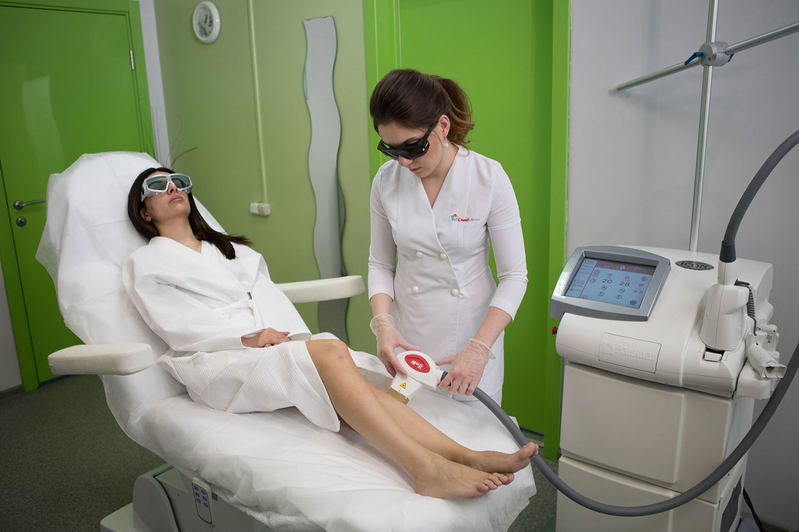

Лазерная эпиляция в Москве
- Стерильные условия
- Безопасное обезболивание
- Процедуру проводит специалист, официально сертифицированный компанией Palomar
- Аппарат зарегистрирован в реестре аппаратов Palomar, официально разрешенных к использованию посмотреть аппарат
- Гарантия результата
Нашими клиентами становятся даже те, кто, казалось бы, навсегда разочаровался в лазере..
Лазерная эпиляция — это услуга, к выбору которой нужно подходить основательно и осторожно.
Это процедура, которая не прощает непрофессионализма.
«Больно..», «Волосы все равно остаются..», «Появились пигментные пятна..», «Получила ожоги..» — это самые распространенные разочарования тех, кто попробовал сделать лазерную эпиляцию у непрофессионалов.
Да, кругом акции. Да, все обещают красивые результаты. Но при выборе специалиста необходимо на время отключить эмоции и помнить, что лазерная эпиляция должна проводиться:
- В стерильных условиях.
- На аппарате, который прошел обязательную сертификацию и ежегодное обязательное техническое обслуживание.
- Специалистом, имеющим право работать на таком аппарате (список сертифицированных аппаратов и специалистов, получивших допуск к работе с лазером, находится на официальном сайте компании PALOMAR palomar.ru).
- С учетом всех противопоказаний (лазерную эпиляцию можно не всем, подробнее о тех, кому грамотный специалист откажет в процедуре, читайте здесь)
Об аппарате
Мы работаем на Palomar ICON. Этот аппарат как Бентли в мире лазера.
Преимущества аппарата PALOMAR ICON.
- Высокая мощность — до 350 Дж за один импульс, что является самой мощной в мире и существенно повышает эффективность проводимых процедур.
- Скорость — считается, что сеансы проходят быстрее, чем при использовании других аналогичных аппаратов, а их количество сокращается, за счет высокой мощности. Процедура для пациента проходит более комфортно и менее затратной по времени и деньгам, при отличном клиническом результате.
- Безопасность. Разработанная компанией Palomar технология «гладкий импульс» используется уже многие годы на лучших лазерных системах и позволяет обеспечить плавное повышение мощности во время импульса, защищая кожу пациента от перегрева или ожогов. Усовершенствованная и надежная система охлаждения Palomar ICON обеспечивает пациенту максимальный комфорт и безболезненность во время процедуры.
- Персонализация. Лазерная система Palomar ICON оснащена сканером Skintel, который сканирует кожу пациента. На основе полученных данных врач выставляет оптимальные параметры, и в последствии сохраняют полученные данные для следующих процедур.
Как проходит процедура лазерной эпиляции в нашем центре
- Вы приходите к нам по предварительной записи в удобное для вас время;
- Заполняете анкету для заключения договора на оказание платных медицинских услуг;
- В кабинете врач-косметолог задает вам вопросы и проводит осмотр, исключает противопоказания к процедуре, вы изучаете информированное согласие, подписываете его и договор;
- Далее доктор определяет фототип кожи и уровень меланина в коже при помощи сканера Скинтел. Это позволяет подобрать наиболее оптимальные для вас параметры;
- Затем врач укладывает вас на кресло, надевает защитные очки и обрабатывает кожу (волосы должны быть не более 1 мм для наиболее эффективного результата);
- Начинается процедура лазерной эпиляции: проводятся вспышки на обрабатываемом участке (это максимально комфортно, т.к. насадка оснащена специальной сапфировой системой охлаждения);
- После процедуры кожа обрабатывается защитными и восстанавливающими средствами;
- Даются рекомендации.
Смотрите видео о процедуре:
Меня зовут Тамара Хестанова, я руководитель медицинского центра «СлимКлиник», приглашаю вас на процедуру лазерной эпиляции.
Этот медицинский центр для меня как один из моих детей, где каждый пациент — это важный и дорогой мне человек.
90% пациентов приходят к нам по рекомендациям. Люди приводят к нам свои семьи, коллег, специально приезжают на процедуры из других городов.
Моя миссия, как руководителя — предлагать клиентам только те процедуры, которые я сделала бы себе или своим близким. Бережное отношение к каждому человеку, как к высочайшей ценности — основной принцип работы СлимКлиник.
Я лично гарантирую вам, что процедуру лазерной эпиляции мы сделаем вам лишь в том случае, если для вас это будет абсолютно безопасно и результативно.Подробнее обо мне и моём образовании
О специалисте, который будет проводить процедуру
Сикоева Диана Ивановна
- Сертифицированный специалист в области ботулинотерапии, контурной пластики, лазерных технологий и эстетической косметологии.
- В 2014 г., окончила Северо-Осетинскую Государственную Медицинскую Академию по специальности «Лечебное дело».
- В 2014-2015 гг., прошла интернатуру по специальности «Дерматовенерология»в РУДН.
- В 2015-2016 гг., прошла курсы переквалификации по специальности «Косметология», 576ч, РУДН.
- В 2016 г., прошла обучение на курсе «Применение микроимплантов» (препаратов контурной пластики) в косметологии и эстетической медицине», РУДН.
- В 2016 г., прошла обучение на курсе «Применение токсина ботулизма в эстетической медицине», РУДН.
- В июле 2016 г., прошла обучение работе на лазерной платформе Palomar ICON
- 2011-2014 гг., врач-консультант в аптеке, г.Владикавказ
- 2014-2016 гг., врач-консультант по лечебной косметике, сеть аптек «Планета Здоровья» г. Москва.
- С 2016 г., работает в медицинском центре «СлимКлиник» в должности врача косметолога.
Моя любовь к Palomar ICON началась задолго до того, как я стала врачом-косметологом и начала работать в Слимклиник.
Будучи студенткой 6 курса медицинской академии решила пойти на лазерную эпиляцию. Тогда я ещё ничего не понимала в лазерах. Мне порекомендовали доктора, к ней я и пошла. Лазер специально не выбирала. В клинике оказался Palomar ICON. Результат лазерной эпиляции мне очень понравился. Но, т.к. я уже заканчивала 6 курс, сделать успела только несколько процедур.
Переехав в Москву, решила продолжить курс и начала искать клинику. И тут уже я искала целенаправленно — клинику, где есть Palomar. На официальном сайте Palomar.ru есть полный перечень клиник, которые работают на аппарате и список докторов, прошедших обучение. Выбрала Слимклиник. И кто мог подумать тогда, что это будет судьбоносный выбор.
Закончив через 2 года учебу в интернатуре и на курсах, став врачом-косметологом я начала искать работу. И вот, опять же волею судьбы, Тамара Зауровна в это же время решила найти второго доктора. Думаю, дальше вы догадались. Собеседование, второе собеседование и вот я уже не пациент, а доктор Слимклиник. В общем, я люблю Palomar не потому, что работаю на нем, а работаю потому, что люблю.
(Диана Сикоева)
Стоимость лазерной эпиляции на разные участки лица и тела
Акция
Эпиляция любой зоны со скидкой 20%
до 15 июня
Ответы на частые вопросы
Какие существуют противопоказания к процедуре лазерной эпиляции?
Беременность, грудное вскармливание, онкология, загорелая кожа (при эпиляции на ней можно получить ожог), период перед нахождением на открытом солнце (отпуск в теплых странах, солнечные ванны - могут остаться пигментные пятна), седые волосы, светлые волосы.
Сколько понадобится процедур для полного удаления волос?
От 5 до 7 в зависимости от индивидуальных особенностей. Это правда.
Те, кто ходит по 20-30 раз на лазерную эпиляцию, ходят к мошенникам и непрофессионалам.
Каков интервал между процедурами?
Интервал составляет 1-1,5 месяца.
Остаются ли рубцы после лазерной эпиляции?
Лазерная эпиляция абсолютно не травмирует кожу, т.к. мишенью является волос.
Когда можно загорать до и после процедуры?
Последний загар должен быть за 2 недели до процедуры. А следующий - через 2 недели после.
Может ли лазерная эпиляция вызвать рак?
Нет, рост раковых клеток стимулирует ультрафиолетовое облучение. В лазерном оборудовании нет таких лучей. Эта процедура совершенно безвредна, ведь глубина проникновения составляет всего несколько миллиметров.
Когда можно оценивать результат?
В течение нескольких дней будет ощущение, что волос растет. На самом деле это мертвый волос выталкивается наружу.
Как быть с родинками на коже?
Врач закрашивает родинки защитным белым карандашом перед эпиляцией.
Сколько уходит времени на процедуру?
В зависимости от обрабатываемой зоны. На саму процедуру уходит от 5 минут до 1 часа.
Правда ли, что лазерная эпиляция хорошо справляется жесткими ими темными волосками, а на светлых и рыжих не так эффективна?
Да, это так. Если волос рыжий, там тоже есть пигмент и лазер увидит эту волосяную луковицу. Совсем светлые, не содержащие меланина волосы, не убрать лазером. Здесь подойдет только электроэпиляция. Людям с рыжими волосами, возможно, потребуется больше процедур.
Как "аукнется" лазерка через годы? Вредно ли это для организма в целом?
Для организма процедура лазерной эпиляции безвредна. Те, у кого может «аукнуться» эпиляция, это пациенты с большим количеством родинок и фототипом выше IV по Фиитцпатрику. Таких на процедуру мы не возьмем и будем рекомендовать воздержаться от лазерной эпиляции в целом.
Какое возрастное ограничение? Можно ли подросткам?
Мы проводим процедуру лазерной эпиляции с 18 лет.
Снижается ли цена на последующие процедуры? Или она будет всегда одна, как за первую?
Цена зафиксирована на все процедуры и она не будет меняться. Исключение - акции.
Некоторые клиники перед глубокой эпиляцией делают УЗИ Нужно ли это для вас и зачем это нужно вообще?
Нам УЗИ не требуется. Возможно, в каком-то салоне это требовалось для исключения беременности на ранних стадиях.
Можно ли делать эпиляцию при очень хрупкой коже и близких к ней сосудах?
Хрупкая и тонкая кожа и на поверхности расположенные сосуды не являются абсолютным противопоказанием к проведению лазерной эпиляции. Точный ответ можно дать только после индивидуальной консультации.
Говорят, что это очень больно..
Во-первых, у разных людей разный болевой порог чувствительности. И то, что одному ужас-ужасный, другому
совсем не страшно. Вот у нас, например, некоторые люди засыпают во время эпиляции.
Во-вторых, сам лазер оснащен охлаждающей и обезболивающей функцией, настолько мощной, что без вспышки
он может вас заморозить.
В-третьих, мы - не садисты. И если человеку правда больно (еще раз повторимся про пороги чувствительности),
то мы остановим процедуру и сделаем местное обезболивание специальным спреем.
Вредна ли лазерная эпиляция на подмышки? Там же лимфоузлы.
Для того, что бы максимально полно ответить на этот вопрос — расскажу о принципах работы лазеров.
У каждого лазера есть своя мишень, на которую он воздействует. Мишень называется хромофором. Хромофором
могут быть меланин, гемоглобин, вода.
У лазеров для эпиляции хромофор –меланин. Это пигмент, который окрашивает волос. Во время вспышки
лазерный луч поглощает только меланин волоса. Все остальные структуры организма не чувствительны
к лазеру. Этот принцип объясняет неэффективность эпиляции светлых и седых волос, а также загорелая
кожа (в ней наоборот много меланина).
Отвечая на вопрос: в области подмышек лазерную эпиляцию делать не опасно. На лимфоузлы лазер никак
не воздействует.
Какова длительность эффекта?
С нашей помощью вы удалите волосы навсегда. Насовсем. Они больше никогда не вырастут.
Волосы удаляются навсегда. Но важно помнить, что частичный рост волос может возобновиться во время
гормональных перестроек (беременность, менопауза).
Действительно ли Palomar Vectus лучше, чем Palomar Icon?
Нет, это заблуждение.
Просто кому-то было выгодно, чтобы по большинству форумов интернета это звучало именно так.
Мы пойдем другим путем и дадим вам ответ на этот вопрос от официального представителя PALOMAR в
России:
Здравствуйте. Разница между эпиляцией на Вектусе и на Айкон имеет две особенности. Если говорить
об эпиляции на этих двух аппаратах для пациента — то разницы нет. Эпиляция и на Айкон и на
Вектусе для пациента имеет одинаковые ощущения, одинаковое количество процедур, одинаковый результат,
одинаковые промежутки между процедурами, одинаковый процент убиваемых волос, одинаковая методика
сбривания волос, аналогично волосы потом выпадают и если пациент начал делать эпиляцию на Вектусе,
а продолжить хочет на Айконе — препятствий нет (и наоборот, после Айкона можно продолжать на
Вектусе). Разница между этими аппаратами есть для владельца клиники — у Айкон возможности широкие,
так как ставятся разные насадки и получаются новые функции (в каждой насадке свой отдельный излучатель),
а Вектус предназначен только для эпиляции волос. Соответственно, если говорить только про эпиляцию,
то у них разная себестоимость процедур из-за того, что ресурс насадки Айкона и ресурс Вектуса различный,
соответственно себестоимость процедур различная и конечная цена для пациента может отличаться. Чтобы
я более полно смог ответить на вопрос, уточните, в связи с чем возник этот вопрос и какое конкретно
отличие Вас подробно интересует? Можете позвонить мне на мобильный, я расскажу отличия более конкретно.
(Алексей Добровольский (palomar.ru)
Запишитесь на бесплатную консультацию
- Врач определит тип кожи и подберет нужные параметры
- Порекомендует количество необходимых процедур
- Ответит на все интересующие вас вопросы
- Сориентирует по общей стоимости
Что говорят о лазерной эпиляции в СлимКлиник
Как нас найти:
Метро Маяковская, первый вагон из центра, выход на 1-ую Тверскую-Ямскую (эскалатор спускается вниз). Выходите из стеклянных дверей метро, далее поворачиваете налево, идете вдоль металлического забора до первого переулка, поворачиваете налево. Это и есть Оружейный переулок. Идете до дома № 11. Отдельный вход под козырьком, справа вывеска «СлимКлиник». Звонок слева.
Особенности нашего расположения:
- Центр Москвы, в пределах Садового кольца.
- Шаговая доступность от м. «Маяковская» 1-2 мин.
- Удобный подъезд, возможность парковки.